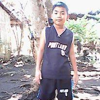
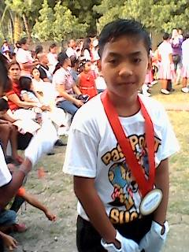
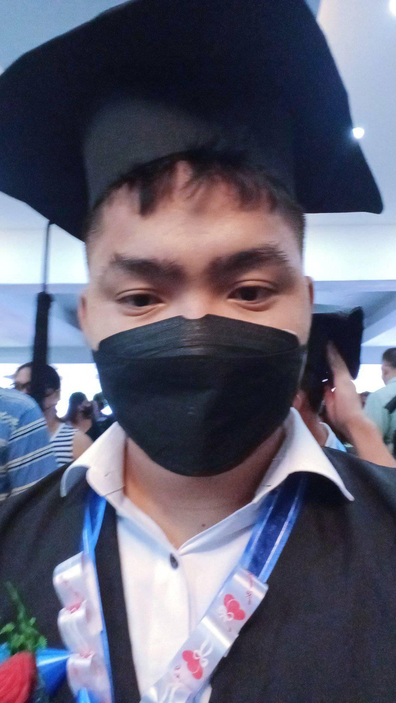
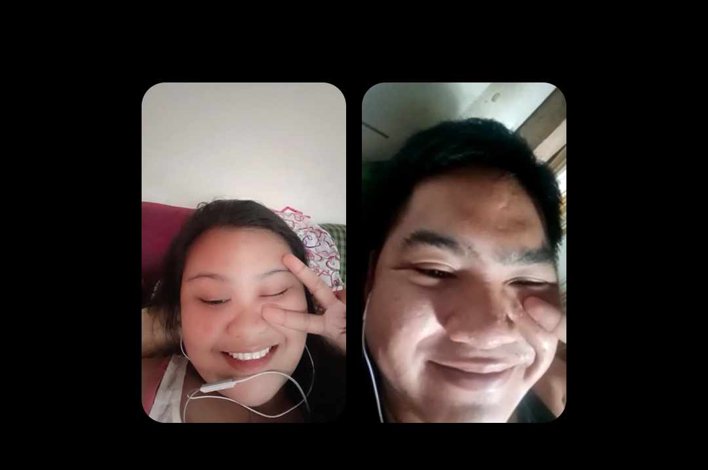
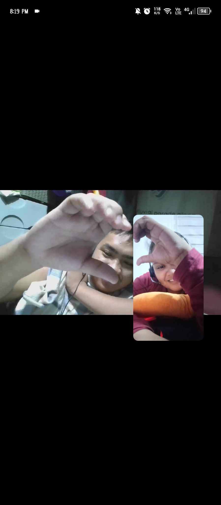
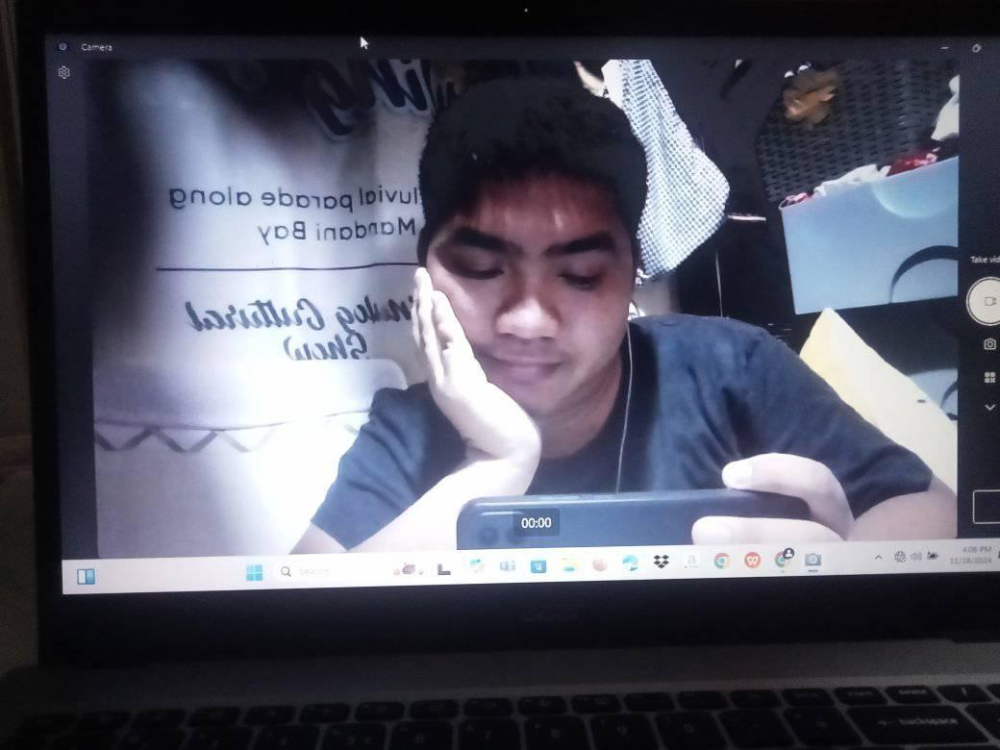
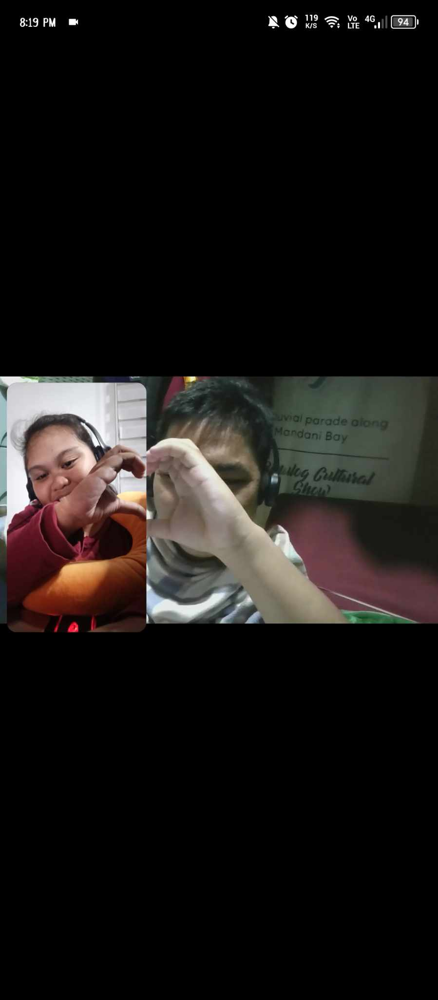

Chapter 1: Early Stages
Hi Guys! My name is Jamesmile C. Nogalada, born on March 11, 2004. I was born in Cebu City but when I was a child, my parents let me grow up in the province so that I could have a memorable childhood as they say to me. When I was a child, I had many fun experiences, like being without an internet connection or gadgets. I could have a great time playing with other kids and enjoy the day without feeling tired. All I can say is that I have wonderful memories from when I was young.
Chapter 2: Elementary Stages
School was my second home. Back in my day, I really loved studying and joining activities. Whatever the school did, it was enjoyable because you would meet so many people and make new friends. School was not stressful for me because I always excused myself due to sports or other extracurricular activities, which helped me make great memories in school.
Chapter 3: Highschool and Senior Highschool Stages
During high school, I was transferred to Mandaue City because my family got a new job. At first, I was shy because I was a transfer student and didn’t have any friends. But over time, I made many friends. They invited me to explore other places and we would often hang out at one of my friend's houses, chatting and enjoying each other's company. When I graduated from high school, I transferred again to a new school for Senior High School. Unfortunately, the pandemic hit, so I didn't get to enjoy the experience of being outside much. But I discovered a lot during this time, even though it was tough.
Chapter 4: Journey with My Aii
 This is my wonderful journey because I have a supportive, caring, loving, and sweet girlfriend. No wonder I'm in love with her. She is the person who helped me through my darkest moments when I was feeling desperate and wanted to give up because of the many problems I encountered. She lifted me up and gave me the love I needed. I had a crush on her for so long, and one day, I finally confessed. After months of waiting and admiring her from afar, I heard the word 'yes.' I was overjoyed, and now we’ve been together for some time. I hope we stay together forever and achieve our goals to make our parents proud. I’m so lucky to have her in my life.
Chapter 5: The Present
 Until now, we continue to pursue our dreams together. Every day, I work hard and maintain myself to achieve the goals I set to become successful. It's a long road, but I’m dedicated to finishing my studies. It may seem far away for now, but one day I’ll be the person standing on that stage, sharing my success with the world.